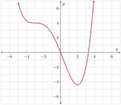

The functions \(\fe{f}{x}=e^{3x}\text{,}\)\(\fe{g}{x}=\left(e^x\right)^3\text{,}\) and \(\fe{h}{x}=\left(e^3\right)^x\) are equivalent. Find the first derivative formulas for each of the functions (without altering their given forms) and then explicitly establish that the derivative formulas are the same.
Answer.
All three functions have derivatives that simplify to \(3e^{3x}\text{.}\)
Consider the function \(\fe{k}{\theta}=\fe{\sin^{-1}}{\fe{\sin}{\theta}}\text{.}\)
2.
Over the interval \(\cinterval{-\frac{\pi}{2}}{\frac{\pi}{2}}\text{,}\)\(\fe{k}{\theta}=\theta\text{.}\) What does this tell you about the formula for \(\fe{\fd{k}}{\theta}\) over \(\ointerval{-\frac{\pi}{2}}{\frac{\pi}{2}}\text{?}\)
Answer.
\(\fe{\fd{k}}{\theta}=1\) over \(\ointerval{-\frac{\pi}{2}}{\frac{\pi}{2}}\)
Solution.
Since the function is just \(\fe{k}{\theta}=\theta\text{,}\) then \(\fe{\fd{k}}{\theta}=1\) over \(\ointerval{-\frac{\pi}{2}}{\frac{\pi}{2}}\text{.}\)
3.
Use the chain rule and an appropriate trigonometric identity to verify your answer to Exercise 6.5.2. Please note that \(\fe{\cos}{\theta}\gt0\) over \(\ointerval{-\frac{\pi}{2}}{\frac{\pi}{2}}\text{.}\)
Answer.
See the solutions section.
Solution.
Over \(\ointerval{-\frac{\pi}{2}}{\frac{\pi}{2}}\text{,}\)
What is the value of \(\fe{\fd{k}}{\frac{\pi}{2}}\text{?}\)
Answer.
\(\fe{\fd{k}}{\frac{\pi}{2}}\) is undefined.
Solution.
The function \(k\) is nondifferentiable at \(\frac{\pi}{2}\) because it transitions instantly from a slope of \(1\) to a slope of \(-1\) at that value.
Exercise Group.
Consider the function \(f\) shown in Figure 6.5.1.
Figure6.5.1.\(y=\fe{f}{x}\)
6.
Suppose that \(\fe{g}{x}=\left[\fe{f}{x}\right]^4\text{.}\) Over what intervals is \(\fd{g}\) positive?
Answer.
\(\ointerval{0}{2}\) and about \(\ointerval{3.2}{\infty}\)
\(\fd{g}\) is positive anywhere \(f\) and \(\fd{f}\) share the same sign. This occurs over \(\ointerval{0}{2}\) and about \(\ointerval{3.2}{\infty}\text{.}\)
7.
Suppose that \(\fe{r}{x}=e^{\fe{f}{x}}\text{.}\) Over what intervals is \(\fd{r}\) positive?
Since the factor of \(-e^{\fe{f}{-x}}\) is always negative, \(\fe{\fd{w}}{x}\) is positive anywhere \(\fe{\fd{f}}{-x}\) is negative. Because the graph of \(y=\fe{\fd{f}}{x}\) is negative on the intervals \(\ointerval{-\infty}{-3}\) and \(\ointerval{-3}{2}\text{,}\)\(\fe{\fd{f}}{-x}\) is negative on the intervals \(\ointerval{-2}{3}\) and \(\ointerval{3}{\infty}\text{.}\) Ergo, \(\fe{\fd{w}}{x}\) is positive over \(\ointerval{-2}{3}\) and \(\ointerval{3}{\infty}\text{.}\) (Major high five if you figured that out on your own!)
9.
Suppose that \(\fe{h}{x}=\frac{1}{\fe{f}{x}}\text{.}\) Is \(h\) differentiable at \(-3\text{?}\) Please note that \(f\) has a horizontal tangent line at \(-3\text{.}\)
Answer.
\(h\)is differentiable at \(-3\) with \(\fe{\fd{h}}{-3}=0\)
So the function \(h\)is differentiable at \(-3\) with \(\fe{\fd{h}}{-3}=0\text{.}\)
Exercise Group.
Decide whether or not it is necessary to use the chain rule when finding the derivative with respect to \(x\) of each of the following functions.
10.
\(\fe{f}{x}=\fe{\ln}{x+1}\)
Answer.
yes
Solution.
There is an “outer” function \(\ln\) and an “inner” function \(\fe{u}{x}=x+1\text{.}\) So we do need the chain rule.
11.
\(\fe{f}{x}=\dfrac{2}{x^5}\)
Answer.
no
Solution.
We can write \(\fe{f}{x}=2x^{-5}\text{,}\) and use the power rule and the constant multiplier rule. We do not need the chain rule.
12.
\(\fe{f}{x}=\fe{\cos}{\pi}\)
Answer.
no
Solution.
This is a constant function. We do not need the chain rule.
13.
\(\fe{f}{x}=\fe{\cos}{x}\)
Answer.
no
Solution.
This is a basic function for which we know the derivative. We do not need the chain rule.
14.
\(\fe{f}{x}=\fe{\cos}{\pi x}\)
Answer.
yes
Solution.
There is an “outer” function \(\cos\) and an “inner” function \(\fe{u}{x}=\pi x\text{.}\) So we do need the chain rule.
15.
\(\fe{f}{x}=\dfrac{\fe{\cos}{\pi x}}{\pi}\)
Answer.
yes
Solution.
Division by \(\pi\) is the same as multiplication by \(\frac{1}{\pi}\text{,}\) so the constant multiplier rule will allow us to deal with the denominator. Otherwise, this is just like the previous exercise, where we do need the chain rule.
Exercise Group.
Find the first derivative with respect to \(x\) of each of the following functions. In all cases, look for appropriate simplifications before taking the derivative. Please note that some of the functions will be simpler to differentiate if you first use the rules of logarithms to expand and simplify the logarithmic expression.
\begin{align*}
\fe{f}{x}&=\fe{\sin^{-1}}{\fe{\cos}{x}}\\
\fe{\fd{f}}{x}&=\frac{1}{\sqrt{1-\left(\fe{\cos}{x}\right)^2}}\cdot\lzoo{x}{\fe{\cos}{x}}\\
&=\frac{1}{\sqrt{1-\fe{\cos^2}{x}}}\cdot-\fe{\sin}{x}\\
&=-\frac{\fe{\sin}{x}}{\sqrt{\fe{\sin^2}{x}}}\\
&=-\frac{\fe{\sin}{x}}{\abs{\fe{\sin}{x}}}\\
&=\begin{cases}-1&\text{$x$ is an ``upward'' angle}\\1&\text{$x$ is a ``downward'' angle}\end{cases}
\end{align*}